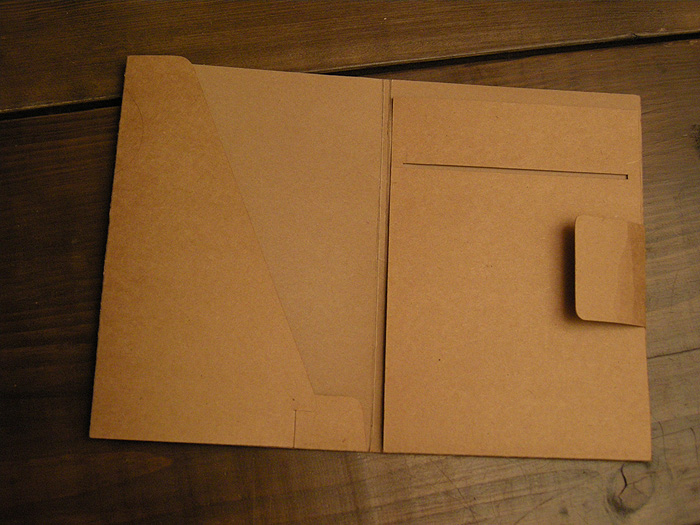
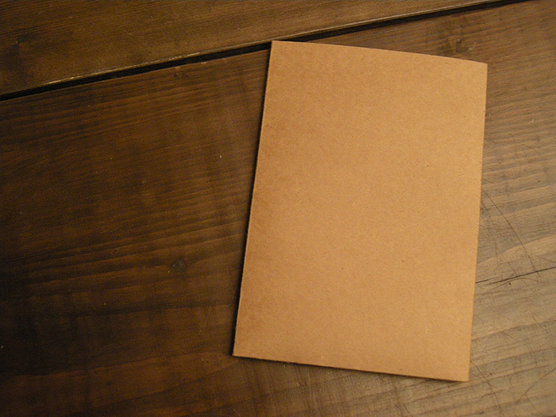
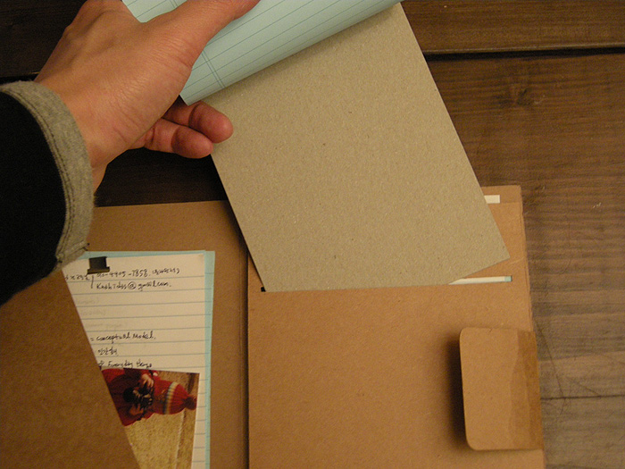
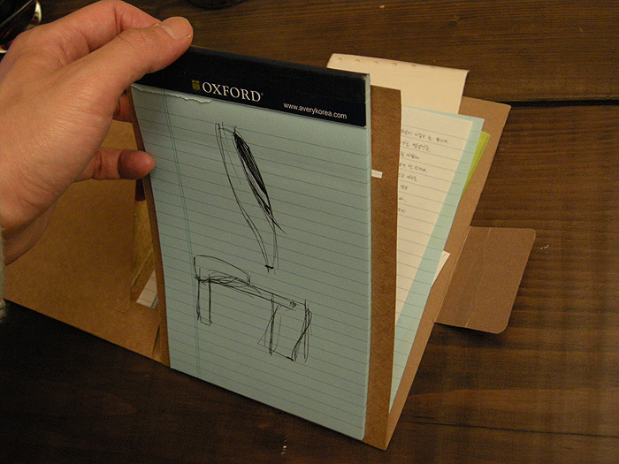
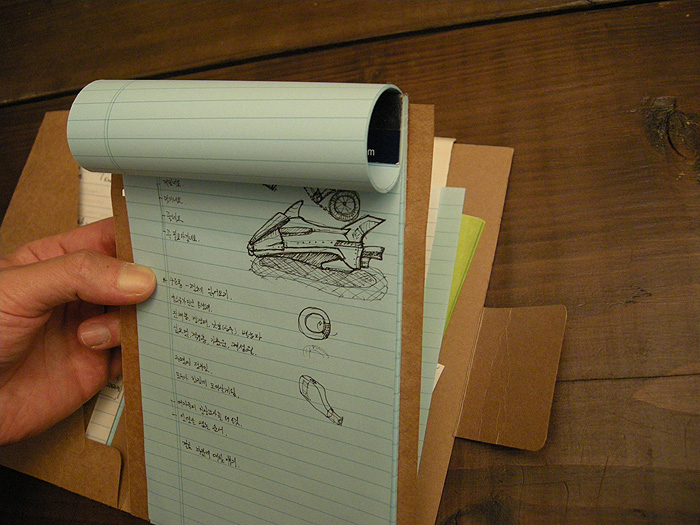
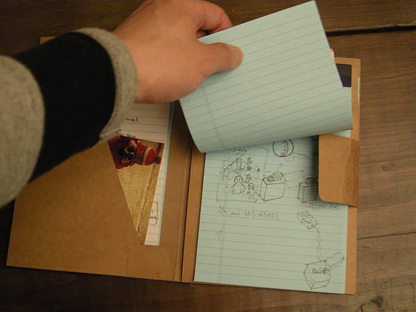
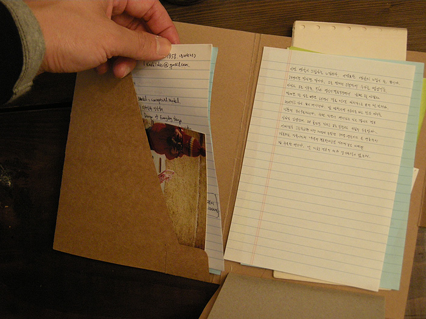

Notepad folder (Jun 10, 2007)
Year : 2007
Notepad folder는 기존 노트패드의 단점들을 보완해주기 위한 물건이다. 노트패드에 적합한 크기와, 노트패드를 쉽게 부착하고 페이지를 쉽게 넘길 수 있는 구조를 가지고 있어서 기존의 노트패드가 가지고 있던 간단하고 빠른 사용구조를 그대로 이용할 수 있다. 또한 folder에 책갈피를 부착하여 쉽게 원하는 페이지를 마킹해 놓을 수 있다. 그리고 노트패드를 보호해 줄 커버는 수납공간을 가지고 있어서 다 쓰고 정리할 페이지를 찢어 쉽게 보관할 수 있다.






